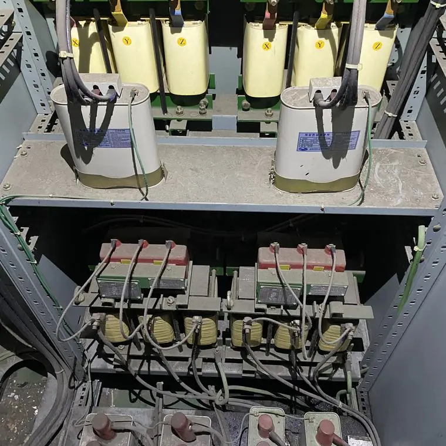
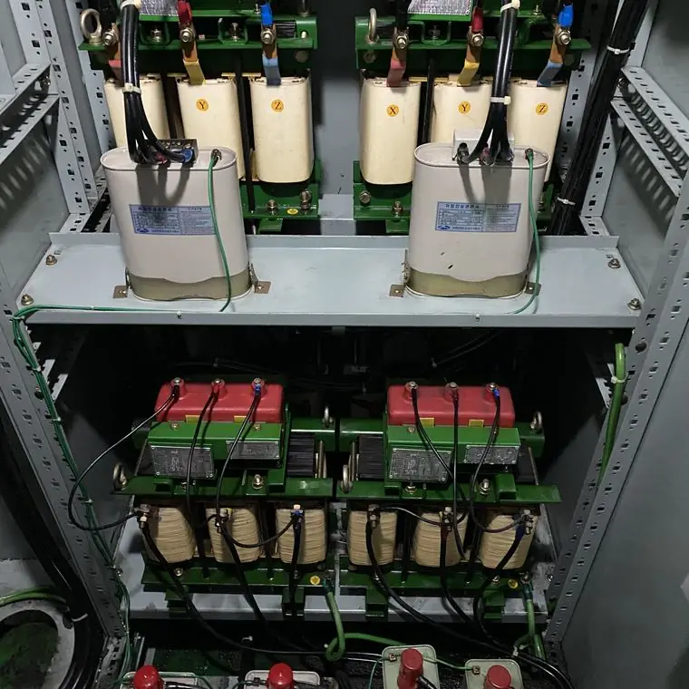

절연 불량은 왜 생기고 어떤 증상이 나타나나요?
최종 수정 2026-11-09
절연 불량은 분진, 습기와 결로, 열화, 오염물, 침수가 대표적인 원인입니다. 원인을 알 수 없는 차단기 동작, 탄 냄새, 변색 같은 증상이 보이면 직접 만지지 말고 전기안전관리자에게 연락하세요.
주요 원인
- 분진: 특히 금속성 먼지는 표면을 따라 전기가 새게 만들 수 있습니다.
- 습기와 결로: 온도 차가 큰 지하나 장마철에 생기기 쉽습니다.
- 열화: 열과 시간에 따라 절연체가 약해집니다.
- 오염물: 염분, 오일, 이물질이 절연 표면에 남는 경우입니다.
- 침수: 물과 함께 흙과 이물질이 들어옵니다.
작업 전

작업 후

초기 증상
- 원인을 알 수 없는 누전차단기나 차단기 동작
- 탄 냄새, 그을음, 변색
- 접촉 불량이나 반복되는 오작동
- 평소보다 높은 표면 온도
발견했을 때 대응
증상이 보이면 직접 열어 만지거나 닦지 마세요. 전기안전관리자나 전문 업체에 연락해 원인을 먼저 확인합니다. 표면 오염이 원인이면 세척을 검토하고, 부품 손상이 있다면 보수나 교체가 필요합니다. 전기설비를 직접 물이나 일반 세제로 청소하는 것은 감전·단락 위험이 있어 권하지 않습니다. 반드시 전문 업체와 전기안전관리자에게 먼저 확인하세요.
자주 묻는 질문
차단기가 자주 떨어지면 절연 불량인가요?
원인은 여러 가지입니다. 절연 불량일 수도 있으므로 전기안전관리자의 점검이 필요합니다.
습기가 많으면 반드시 절연이 나빠지나요?
반드시 그렇지는 않지만 분진과 겹치면 표면 누설이 늘 수 있어 관리가 필요합니다.
설비 사진과 정보를 남기시면 확인 후 견적을 안내해 드립니다.
무료 견적 문의하기이 글은 시공 업체가 공개한 자료와 일반적인 전기설비 관리 상식을 바탕으로 작성했습니다. 설비별 적용 여부와 결과는 현장 확인 후 달라질 수 있습니다.